For the person who runs ManOp for their company and sites.
Screenshots are taken from the running application with synthetic sample data. Version of 2026-11-25.
1. Becoming the site administrator
The ManOp team creates your company and first site and emails you an invitation. Open it, set your password, and you are the site administrator (owner) with maintenance-manager rights.
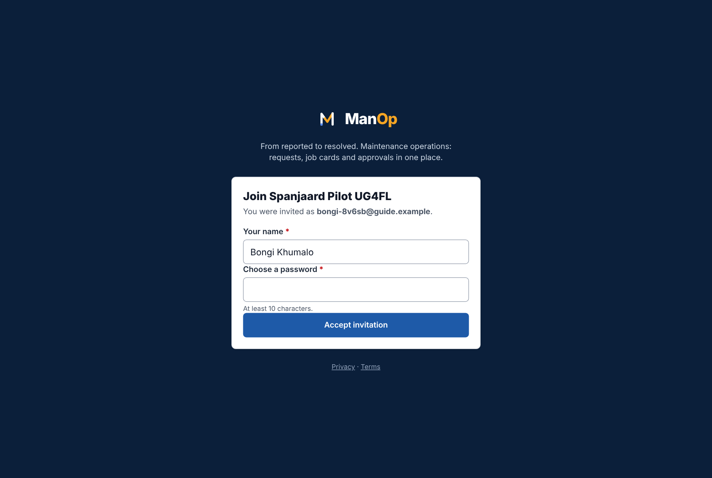
Accepting the invitation
2. Sites, areas and QR codes
Sites → your site → add areas (Workshop, Offices, Warehouse, Production …) and equipment.
Switch on QR reporting without an account in Settings if visitors and staff without accounts should report.
Download QR signs (PDF): one A4 sign for the site and one per area. Print and put them up. Or print the smaller stickers.
Replace link if signs are misused: all old codes stop working; print new ones.
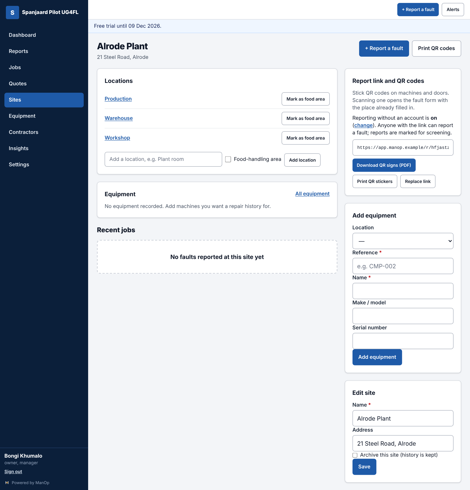
Site page with the short report link
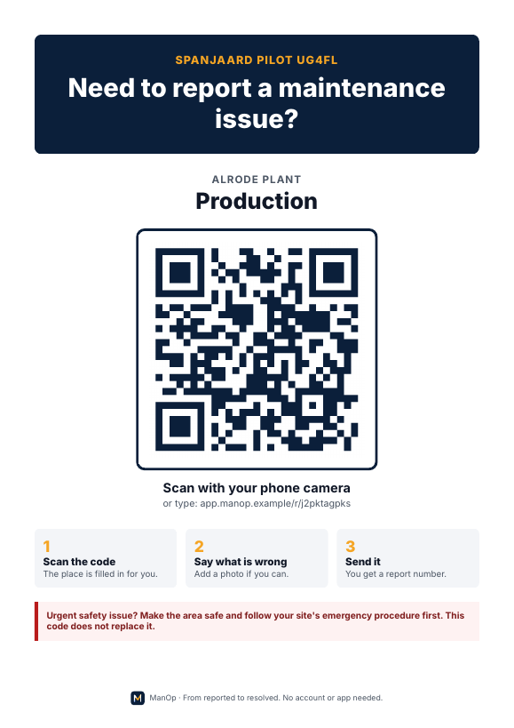
An A4 QR sign
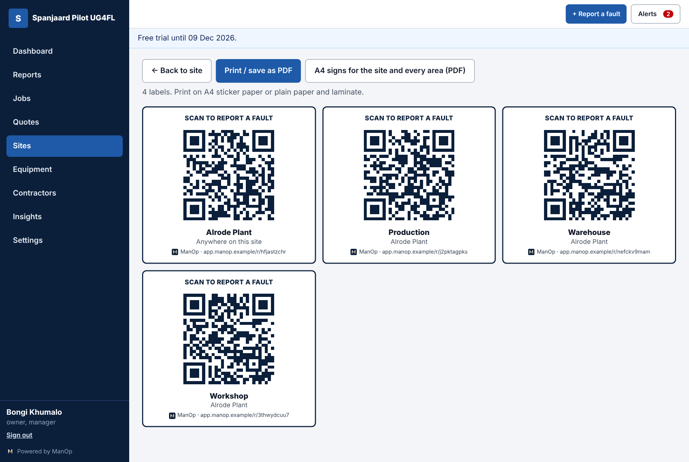
QR stickers
3. Departments
Settings → Departments: add departments such as Maintenance, Operations, Management and Finance; add people and tick Department manager for the person who runs it. Departments group people; roles still decide what someone may do. Department managers see their department's open work on their dashboard and can hand jobs over.
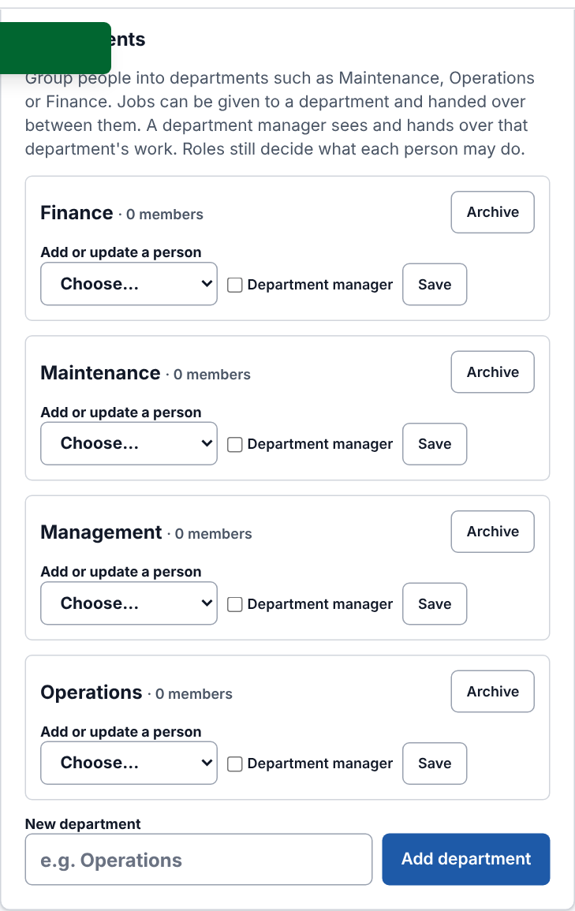
Departments
4. Adding employees
Invite: Settings → Invite someone (email, role, sites). Best for managers and technicians you know.
Registration code: Settings → Registration codes → Create code (all sites or one site, valid for a number of days). Share the code or link. Switch it off or Replace it at any time. A code never gives access by itself.
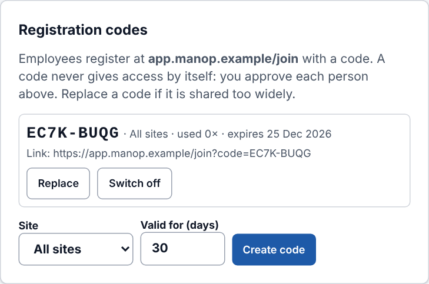
Registration codes
5. Approving registrations and assigning roles
People who used a code appear under Waiting for approval with their details. Once their email is confirmed, choose their role(s), department and whether they manage it, then Approve access (or Decline). They are emailed either way. Change roles later in Team; untick Active to remove access immediately.
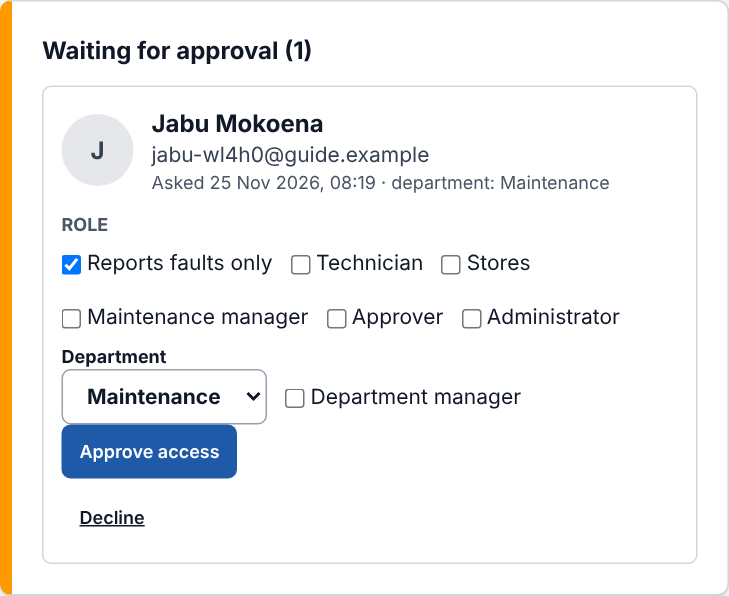
Waiting for approval
6. Managing site requests
The dashboard shows new reports, unassigned jobs, possible duplicates, jobs waiting for assessment, quotes, approval, work in progress, overdue, waiting for confirmation, reopened and completed. Filter by department, status, site, priority or technician. Public (QR) reports are marked To screen: accept them for assessment or reject them with a reason.
Dashboard
7. Department work queues and handovers
On a job, Department → Hand over this job: choose the department and/or person and say why or what must happen next. The handover is recorded with who, from, to, why and when; only the receiver is notified.
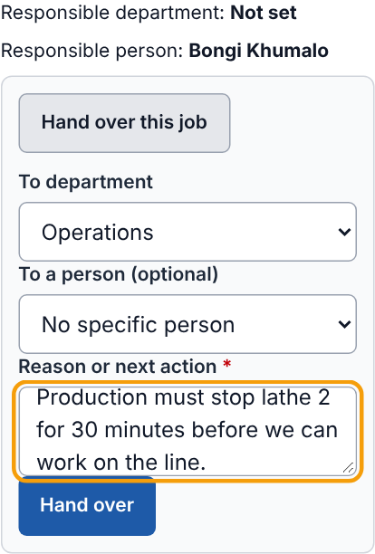
Handing a job over
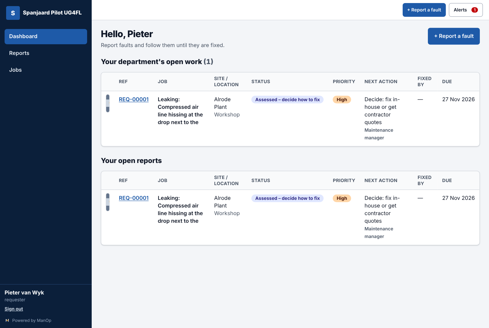
A department manager's queue
8. Duplicate and reopened jobs
When a report looks like an open or recent job (same site, same area or machine, similar words), it is marked Possible duplicate. Compare the original reports under Related reports, then Link as duplicate (the report and reporter stay on record; unworked reports are closed as “Duplicate of …”) or Not a duplicate – keep separate. Closed jobs can be reopened with a reason; the original closure stays in the history.
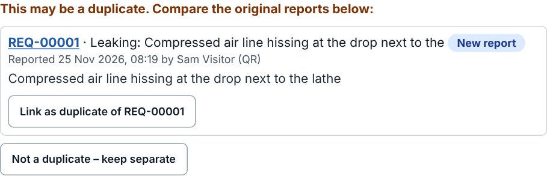
Duplicate review
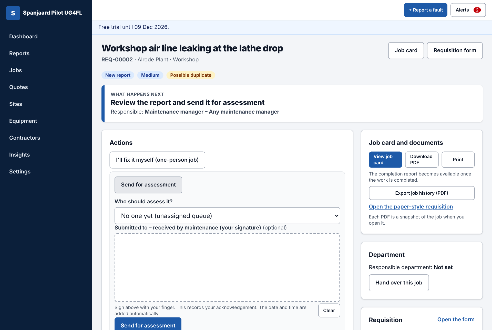
A linked duplicate
9. Downloading reports and documents
Job card, completion report and job history PDFs from each job.
Insights: spend, response and fix times, root causes, contractors; area reports; CSV download.
Settings → Export (owners): all company data as JSON.
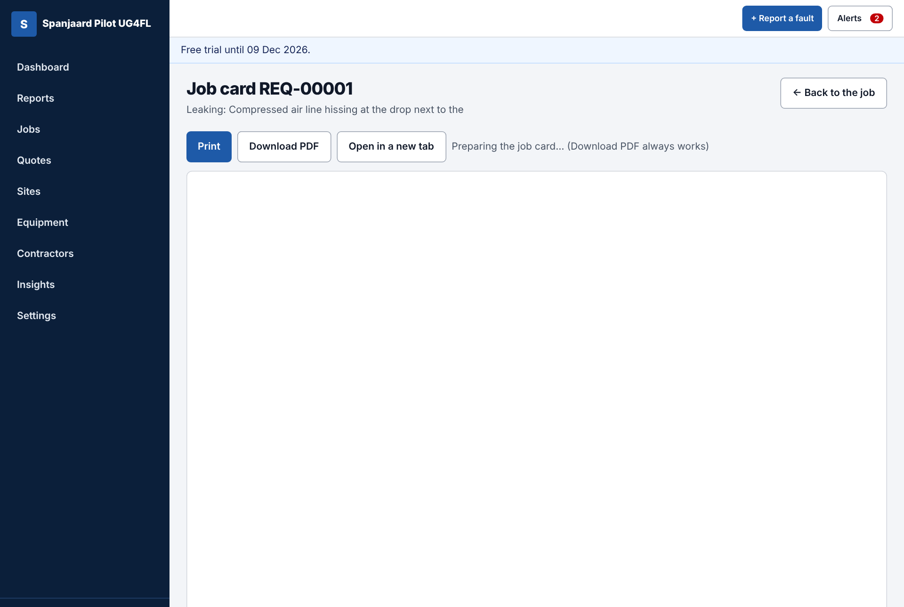
Job card viewer
10. One-person job rules
Settings → Company → One-person jobs: allow staff to do a job start to finish themselves, and choose whether a maintenance manager signs those jobs off before they close. The dashboard shows One-person jobs in progress and One-person jobs to sign off.
11. Support access
ManOp staff cannot see your jobs. If you need help, Settings → Support access grants read-only access for a limited time; every visit is recorded in your history and you can revoke it.